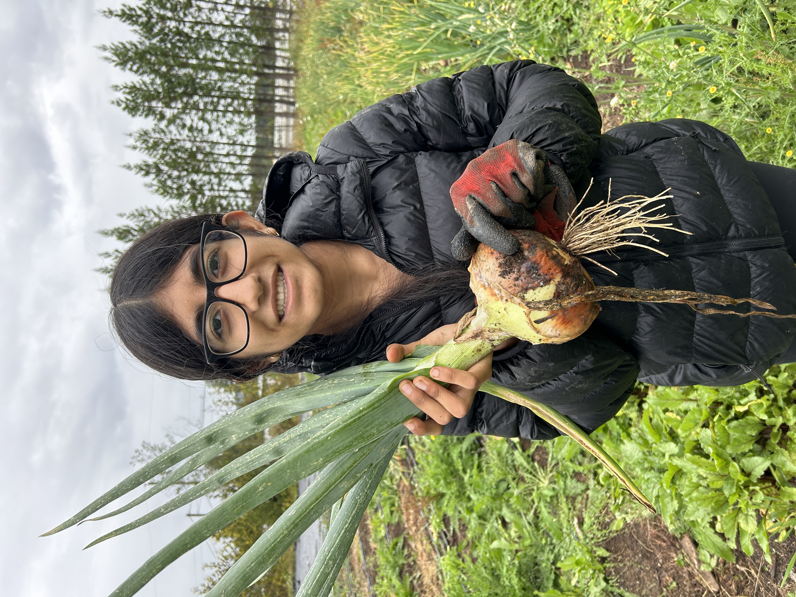
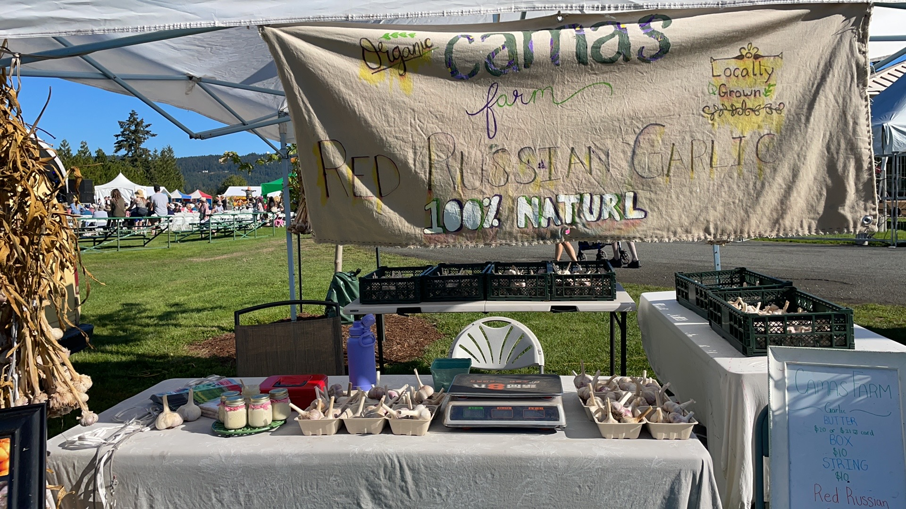
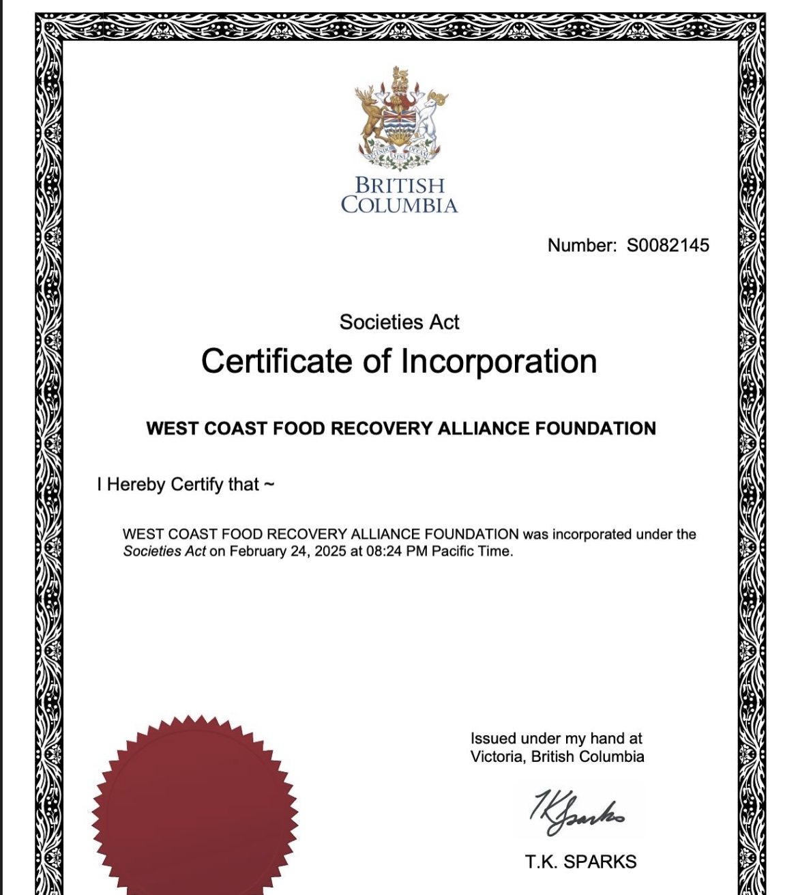
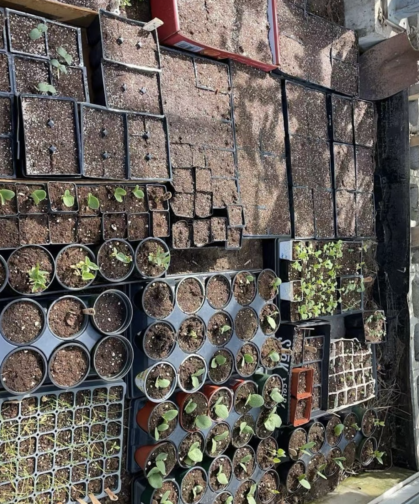
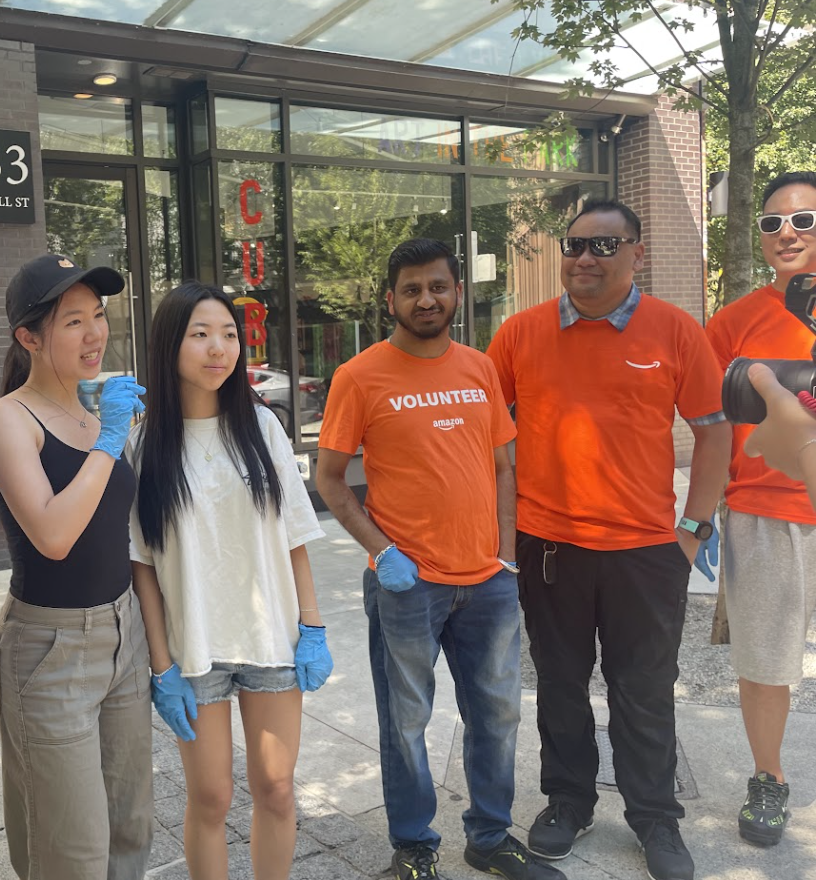
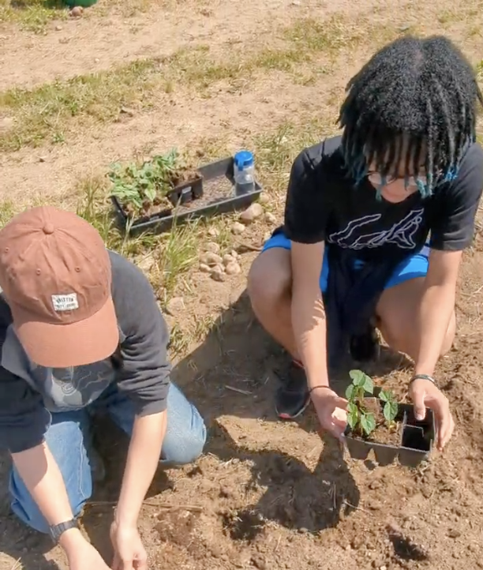

The Beginning
Started by our founder and two other high school students with a passion for reducing food waste. First partnership with City's Edge Farm rescued 20 lbs of produce.

Volunteer Outreach
Developed our community outreach program volunteering at some of our first partner farms Camas Farms, City's Edge Farm, and Black Dirt Farm.
Our First Fundraiser
Sold 1000 dollars+ of garlic butter at the Saanich fair marking our first fundraising event.
Provincial and Federal Incorporation
Officially Incorporated as West Coast Food Recovery Alliance Foundation under the British Columbia Societies Act and then later federally under the Government of Canada.
Started our Community Garden and Youth Education Program
Built a Youth-Run Community Garden to promote sustainable agriculture and provide fresh produce to local food banks.
Opened our Vancouver Chapter
Expanded into Vancouver where we would go on to establish partnerships with Kind Hearted Farm, local organization Project Hastings and Amazon volunteers.
Today
70+ active volunteers, 15+ partner organizations, and over 7,000 pounds of food recovered.
Rapid Growth
Connected with 10+ local farms and organizations in Victoria and Vancouver.